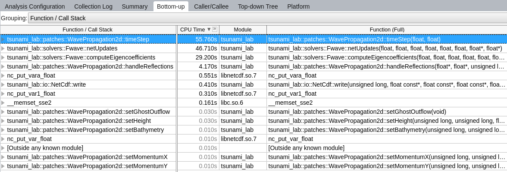
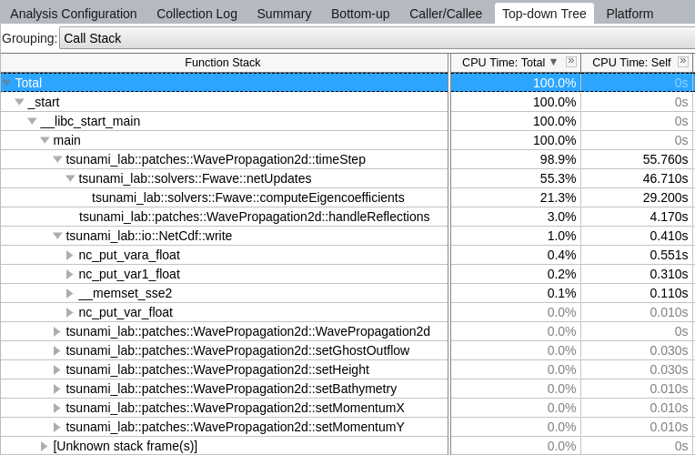
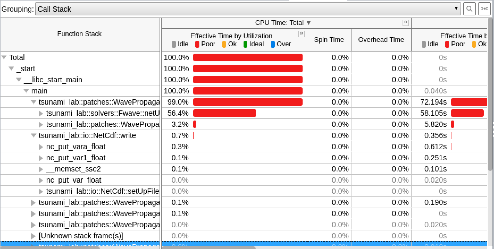
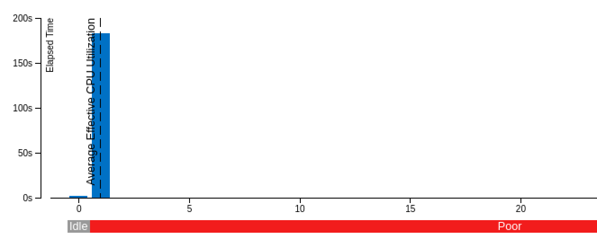

8. Optimization
8.1 ARA

HPC-Cluster ARA. Source: https://wiki.uni-jena.de/pages/viewpage.action?pageId=22453005
8.1.1 - Uploading and running the code
First we cloned our github repository to “beegfs” and transfered the bythymetry and displacement data with “wget https://cloud.uni-jena.de/s/CqrDBqiMyKComPc/download/data_in.tar.xz -O tsunami_lab_data_in.tar.xz” there.
To use scons, we have to execute “module load tools/python/3.8” and “pip install –user scons” first and then load the compiler via “module load compiler/gcc/11.2.0”.
sbatch file:
#!/bin/bash
#SBATCH --job-name=tohoku_1000
#SBATCH --output=tohoku_1000.out
#SBATCH --error=tohoku_1000.err
#SBATCH --partition=s_hadoop
#SBATCH --nodes=1
#SBATCH --ntasks=1
#SBATCH --time=10:00:00
#SBATCH --cpus-per-task=72
#load modules
module load compiler/gcc/11.2.0
# Enter your executable commands here
# Execute the compiled program
scons
./build/tsunami_lab
Since we only want to use one node, we set nodes and ntasks to 1 and cpus-per-task to 72.
8.1.2 - Visualizations
Tohoku 5000
Tohoku 1000
Chile 5000
Chile 1000
Comparing to the simulations from assignment 6, it is clear that all simulations behave equally.
8.1.3 - Private PC vs ARA
Note
The code was compiled using scons mode=benchmark opt=-O2.
The benchmarking mode disables all file output (and also skips all imports of <filesystem>).
Setups
If you are interested, you can view the used configurations here:
chile5000.json
|
chile1000.json
|
tohoku5000.json
|
tohoku1000.json
Results
Device |
Config |
Setup time |
Computation time |
Total time |
Cells |
Setup time per cell |
Calculation time per cell |
|---|---|---|---|---|---|---|---|
private |
chile5000 |
5.56396s |
31.6052s |
41.3911s |
413.000 |
0.01347ms |
0.07652ms |
ARA |
chile5000 |
5.06402s |
31.6528s |
42.7966s |
413.000 |
0.01226ms |
0.07664ms |
private |
chile1000 |
139.167s |
4017.46s |
4160.25s |
10.325.000 |
0.01348ms |
0.3891ms |
ARA |
chile1000 |
127.257s |
4204.83s |
4338.24s |
10.325.000 |
0.01233ms |
0.40725ms |
private |
tohoku5000 |
1.70329s |
14.6443s |
22.5213s |
162.000 |
0.01051ms |
0.09040ms |
ARA |
tohoku5000 |
1.49705s |
14.8791s |
18.9277s |
162.000 |
0.00924ms |
0.09184ms |
private |
tohoku1000 |
41.2804s |
1888.40s |
1931.84s |
4.050.000 |
0.01019ms |
0.46627ms |
ARA |
tohoku1000 |
37.7817s |
1949.85s |
1990.99s |
4.050.000 |
0.00933ms |
0.48144ms |
Note
Total time is not just setup + calculation time.
The total execution timer is invoked directly at the start of the main function
and stopped after the program has finished and all memory has been freed.
Observations
In every scenario, ARA had a faster setup time but slower computation times. We conclude that ARA has faster data/file access (because the setup heavily depends on data reading speed from a file) while the private PC seems to have better single core performance.
8.2 Compilers
8.2.1 - Generic compiler support
We enabled generic compiler support by adding the following lines to our SConstruct file
import os
...
# set local env
env['ENV'] = os.environ
# choose compiler
if 'CXX' in os.environ:
env['CXX'] = os.environ['CXX']
Now, scons can be invoked with a compiler of choice, for example by running
CXX=icpc scons
8.2.2 & 8.2.3 - Test runs
Time measurements
For each run, we used the following configuration:
{
"solver": "fwave",
"simulationSizeX": 10000,
"simulationSizeY": 10000,
"offsetX": 5000,
"offsetY": 5000,
"nx":2000,
"ny":2000,
"setup":"ARTIFICIAL2D",
"endTime":50
}
We ran the tsunami_lab program in benchmarking mode without file output. The results can be seen below.
Compiler |
Optimization flag |
Setup time |
Computation time |
Total time |
|---|---|---|---|---|
g++ |
-O0 |
0.152468s |
741.348s |
741.575s |
g++ |
-O2 |
0.0615546s |
273.039s |
273.151s |
g++ |
-Ofast |
0.0607083s |
203.635s |
203.743s |
icpc |
-O0 |
0.207138s |
1230.19s |
1230.48s |
icpc |
-O2 |
0.0724063s |
254.169s |
254.308s |
icpc |
-Ofast |
0.0704465s |
251.197s |
251.33s |
Note
Total time is not just setup + calculation time.
The total execution timer is invoked directly at the start of the main function
and stopped after the programm finished and all memory has been freed.
For g++, we used the module compiler/gcc/11.2.0.
Unfortunately, we were not able to use the latest compiler versions for icpc.
When using compiler/intel/2020-Update2, we got errors such as:
tsunami_lab/build/src/setups/TsunamiEvent1d.cpp:38: undefined reference to `tsunami_lab::io::Csv::splitLine(std::__cxx11::basic_stringstream<char, std::char_traits<char>, std::allocator<char> >, char, std::vector<std::__cxx11::basic_string<char, std::char_traits<char>, std::allocator<char> >, std::allocator<std::__cxx11::basic_string<char, std::char_traits<char>, std::allocator<char> > > >&)'
for compiler/gcc/11.2.0.
With compiler/gcc/10.2.0, there were issues like:
/cluster/spack/opt/spack/linux-centos7-broadwell/gcc-8.1.0/gcc-10.2.0-ru4xdhhkxnma5i727b7njtnjoh6kff3s/include/c++/10.2.0/tuple(566): error: pack "_UElements" does not have the same number of elements as "_Elements"
__and_<is_nothrow_constructible<_Elements, _UElements>...>::value;
Versions compiler/intel/2019-Update5 and compiler/intel/2019-Update3 did not work due to missing licences.
We therefore ended up using compiler/intel/2018-Update1 and gcc (GCC) 4.8.5 which is already available without loading any module.
This configuration was the only one that worked for us, as we did not manage to fix all the errors that were thrown at us.
Observations from the table
As one would intuitively expect, the higher the optimization level is, the quicker the process finished.
One can observe that g++ was faster using both -O0 and -Ofast flags,
however with the -O2 flag, icpc took the lead.
Worth noting is also, that the jump from -O2 to -Ofast was much bigger when using g++ than with icpc.
In conclusion, it can not be said that one compiler always generates faster code than the other.
For that, we nearly don’t have enough data to compare.
We would also need to ensure that there are no other intensive processes running which could unintentionally slow down the code.
Nonetheless, by using the table as a rough estimate it seems that g++ is faster when using -O0 and -Ofast while icpc is preferable for -O2.
8.2.3 - Optimization flags
To allow for an easy switch between optimization flag, we added following code to our SConstruct:
EnumVariable( 'opt',
'optimization flag',
'-O3',
allowed_values=('-O0',
'-O1',
'-O2',
'-O3',
'-Ofast')
and
# set optimization mode
if 'debug' in env['mode']:
env.Append( CXXFLAGS = [ '-g',
'-O0' ] )
else:
env.Append( CXXFLAGS = [ env['opt'] ] )
The dangers of -Ofast
One of the options that -Ofast enables is -ffast-math.
With that, a whole lot of other options get activated as well, such as
-funsafe-math-optimizations
enables optimizations that allow arbitrary reassociations and transformations with no accuracy guarantees
does not try to preserve the sign of zeros
due to roundoff errors the associative law of algebra do not necessary hold for floating point numbers and thus expressions like (x + y) + z are not necessary equal to x + (y + z)
-fnofinite-math-only
assumes that arguments and results are not NaNs or +-Infs -> unsafety
-fno-rounding-math
assumes that rounding mode is round to nearest
-fexcess-precision=fast
operations may be carried out in a wider precision than the types specified in the source if that would result in faster code,
it is unpredictable when rounding to the types specified in the source code takes place
Our sources are https://gcc.gnu.org/wiki/FloatingPointMath and https://gcc.gnu.org/onlinedocs/gcc/Optimize-Options.html
8.2.4 - Compiler reports
We added the support for a compiler report flag with the following lines in our SConstruct
EnumVariable( 'report',
'flag for enabling reports',
'none',
allowed_values=('none',
'-qopt-report',
'-qopt-report=1',
'-qopt-report=2',
'-qopt-report=3',
'-qopt-report=4',
'-qopt-report=5')
To test it out, we ran the code on the ARA machine with following parameters:
CXX=icpc scons mode=benchmark opt=-O2 report=-qopt-report
The generated report for the main class (without the parts about submodules) can be found here.
We can see that five for-loops were not vectorized. For example:
LOOP BEGIN at build/src/main.cpp(488,5)
remark #15333: loop was not vectorized: exception handling for a call prevents vectorization [ build/src/main.cpp(497,54) ]
LOOP BEGIN at build/src/main.cpp(492,7)
remark #15333: loop was not vectorized: exception handling for a call prevents vectorization [ build/src/main.cpp(497,54) ]
LOOP END
LOOP END
This snippet refers to the loops that provide our solver with data from a setup:
for (tsunami_lab::t_idx l_cy = 0; l_cy < l_ny; l_cy++)
{
for (tsunami_lab::t_idx l_cx = 0; l_cx < l_nx; l_cx++)
{
}
}
F-Wave optimization report
The full report can be found here.
Starting with the computeEigenvalues() function, the report tells us that the lines
t_real l_hSqrtL = std::sqrt(i_hL);
t_real l_hSqrtR = std::sqrt(i_hR);
t_real l_ghSqrtRoe = m_gSqrt * std::sqrt(l_hRoe);
are inline:
-> INLINE: (20,21) std::sqrt(float)
-> INLINE: (21,21) std::sqrt(float)
-> INLINE: (29,34) std::sqrt(float)
This means that the call to std::sqrt(float) will be replaced with the actual implementation of that function.
For computeEigencoefficients, we can see that
t_real l_rInv[2][2] = {{0}};
...
t_real l_fDelta[2] = {0};
are implemented by the compiler using memset:
build/src/solvers/Fwave.cpp(48,23):remark #34000: call to memset implemented inline with stores with proven (alignment, offset): (16, 0)
build/src/solvers/Fwave.cpp(55,22):remark #34000: call to memset implemented inline with stores with proven (alignment, offset): (16, 0)
For netUpdates, the report tells us that
INLINE REPORT: (tsunami_lab::solvers::Fwave::netUpdates( [...] )) [3] build/src/solvers/Fwave.cpp(77,1)
-> INLINE: (86,3) tsunami_lab::solvers::Fwave::computeEigenvalues( [...] )
[...]
-> INLINE: (97,3) tsunami_lab::solvers::Fwave::computeEigencoefficients( [...] )
We can conclude that the compiler is able to inline our calls to computeEigenvalues and computeEigencoefficients.
WavePropagation2d optimization report
The full report can be found here.
To keep it short, the report tells us that the loops for the x- and y-sweep (which compute the net update) could not be vectorized:
LOOP BEGIN at build/src/patches/WavePropagation2d.cpp(86,3)
remark #15543: loop was not vectorized: loop with function call not considered an optimization candidate.
LOOP BEGIN at build/src/patches/WavePropagation2d.cpp(88,5)
remark #15523: loop was not vectorized: loop control variable l_ec was found, but loop iteration count cannot be computed before executing the loop
LOOP END
LOOP END
LOOP BEGIN at build/src/patches/WavePropagation2d.cpp(152,3)
remark #15543: loop was not vectorized: loop with function call not considered an optimization candidate.
LOOP BEGIN at build/src/patches/WavePropagation2d.cpp(154,5)
remark #15523: loop was not vectorized: loop control variable l_ed was found, but loop iteration count cannot be computed before executing the loop
LOOP END
LOOP END
Note
Lines 86 and 88 are the two for-loops for y- and x-axis of the x-sweep and lines 152 and 154 are the two for-loops for y- and x-axis of the y-sweep.
8.3 Instrumentation and Performance Counters
8.3.1 to 8.3.4 - VTune
First we used the gui of Intel vTune to specify our reports.
Then the following batch script was used to run the hotspots measurement:
#!/bin/bash
#SBATCH --job-name=vTune
#SBATCH --output=vTune.out
#SBATCH --error=vTune.err
#SBATCH --partition=s_hadoop
#SBATCH --nodes=1
#SBATCH --ntasks=1
#SBATCH --time=10:00:00
#SBATCH --cpus-per-task=72
module load compiler/intel/2020-Update2
/cluster/intel/vtune_profiler_2020.2.0.610396/bin64/vtune -collect hotspots -app-working-dir /beegfs/xe63nel/tsunami_lab/build -- /beegfs/xe63nel/tsunami_lab/build/tsunami_lab ../configs/config.json
Hotspots
 The most compute-intensive part is the computeEigencoefficients() function. This was to be expected, since it computes
the inverse of right eigenvector-matrix
\(\Delta f\)
\(\Delta x \Psi_{i-1/2}\)
the two eigencoefficients as the product of the inverse of right eigenvector-matrix and \(\Delta f\)
for all cell edges every time step.
It was interesting to see (although it should not come as a surprise) that the timeStep() function used up almost 99%
of the CPU time.
Threads
 The poor result for the thread report was also expected, because we only compute sequentially.
8.3.5 - Code optimizations
TsunamiEvent2d speedup
In order to increase the speed of this setup, we introduced a variable lastnegativeIndex for the X and Y direction for the bathymetry and displacement.
The idea is the following:
When making a bathymetry or displacement query on the arrays, we need to find the point of the data grid which is closest to our queried point.
With a naive implementation, we traverse the full arrays for x- and y-values every time until we have discovered the closest point.
Since the values are monotonically increasing, we start from index 0 and in the worst case, traverse the whole array.
If the first half of the array is filled with negative numbers due to an offset and the queried point has positive coordinates, we waste time traversing the negative part of the array. We can optimize this if we traverse the array on initialization and save the index of the last negative number before the values turn positive. Now if we look for a positive coodinate, we will start searching from the saved index on and skip the negative part of the array.
We tested this for the chile1000 scenario (Chile Tsunami Simulation with 1000m cell size) in benchmarking mode:
Setup time:
Before: 222.709s
After: 140.509s
We can observe a 36.9% decrease in time.
Code snippets of the implementation:
traverse the x- and y-axis data for the bathymetry and note last negative index (initialized to 0)
if (m_xDataB[0] < 0 && m_xDataB[m_nxB - 1] > 0)
{
for (t_idx l_ix = 1; l_ix < m_nxB; l_ix++)
{
if (m_xDataB[l_ix - 1] < 0 && m_xDataB[l_ix] >= 0)
{
m_lastNegativeIndexBX = l_ix - 1;
break;
}
}
}
use the saved index if the queried point is >= 0
tsunami_lab::t_real tsunami_lab::setups::TsunamiEvent2d::getBathymetryFromArray(t_real i_x,
t_real i_y) const
{
[...]
t_idx l_ix = i_x >= 0 ? m_lastNegativeIndexBX : 1;
for (; l_ix < m_nxB; l_ix++)
{
[...]
}
F-Wave solver optimization
In computeEigencoefficients, we changed
t_real l_rInv[2][2] = {{0}};
l_rInv[0][0] = l_detInv * eigenvalueRoe_2;
l_rInv[0][1] = -l_detInv;
l_rInv[1][0] = -l_detInv * eigenvalueRoe_1;
l_rInv[1][1] = l_detInv;
to
t_real l_rInv[4] = {l_detInv * eigenvalueRoe_2, -l_detInv, -l_detInv * eigenvalueRoe_1, l_detInv};
in order to skip the unnecessary step of initializing the array to 0. Furthermore, we now use a one dimensional array for better performance.
Equally we did this for
t_real l_fDelta[2] = {0};
l_fDelta[0] = i_huR - i_huL;
l_fDelta[1] = (i_huR * i_huR / i_hR + t_real(0.5) * m_g * i_hR * i_hR) - (i_huL * i_huL / i_hL + t_real(0.5) * m_g * i_hL * i_hL);
to
t_real l_fDelta[2] = {{i_huR - i_huL}, {(i_huR * i_huR / i_hR + t_real(0.5) * m_g * i_hR * i_hR) - (i_huL * i_huL / i_hL + t_real(0.5) * m_g * i_hL * i_hL)}};
Furthermore, we established a constant for t_real(0.5) * m_g:
static t_real constexpr l_gHalf = 4.903325;
Coarse Output optimization
Inside the write() function in NetCdf.cpp we calculated
l_data[l_i] /= m_k * m_k;
to get the average value of the m_k * m_k cells which we summed up. To optimize this, we compute
t_real l_averagingFactor = 1 / m_k * m_k;
once and then reuse it wherever we need it:
l_b[l_i] *= l_averagingFactor;
This way, the division only happens once.
Individual phase ideas
For the individual phase, we plan on building a graphical user interface using ImGui.
We plan to implement following features:
run a simulation with the click of a button
stop a simulation with the click of a button
specify simulation parameters (size, cells, endTime, etc.)
specify file paths (netCdf output, checkpoint, bathymetry, displacement)
save and load config files
enable/disable checkpoints
monitor time status in
simTime / endTimetimeStep / maxTimeStepscurrent execution time (real time)
estimated real time left
monitor system info
trigger a re-compilation with parameters
In case there is time left, we want to try to implement a python script (which can be called via the gui) that calls Paraview and renders an animation from a solution file, without the need for the Paraview Gui. However this part of the project is entirely optional and we are unsure if we will have the capabilities to implement it.